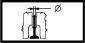

CYLINDER HEADS VALVE GUIDES
- Path
- Technical Data > 10 ENGINE > 1016 CYLINDER HEAD/S > CYLINDER HEADS VALVE GUIDES
- Kind
- technical data / specifications
- Applies to
- engines: 2.0 JTS, 3.2 V6, 1.9 JTD 16V; all production periods
- Interactive page
- https://sloeber94.github.io/elrnDB-aGt/en/#/125000088
Applies to: engines: 2.0 JTS, 3.2 V6, 1.9 JTD 16V; all production periods
Stem diameter (mm) | Validity |  | ||
|---|---|---|---|---|
Exhaust | Inlet | |||
5.972 ÷ 5.990 | 5.982 ÷ 6.000 | 1.9 JTD 16V | ||
Valve contact band taper (-) | Validity | |||
|---|---|---|---|---|
45˚ 30' | 2.0 JTS | |||
Valve head diameter (mm) | Validity | |||
|---|---|---|---|---|
Exhaust | Intake | |||
28.2 | 33.7 | 2.0 JTS | ||
Valve stem diameter (mm) | Validity | |||
|---|---|---|---|---|
Exhaust | Inlet | |||
6.960 ÷ 6.975 | 6.975 ÷ 6.990 | 2.0 JTS | ||